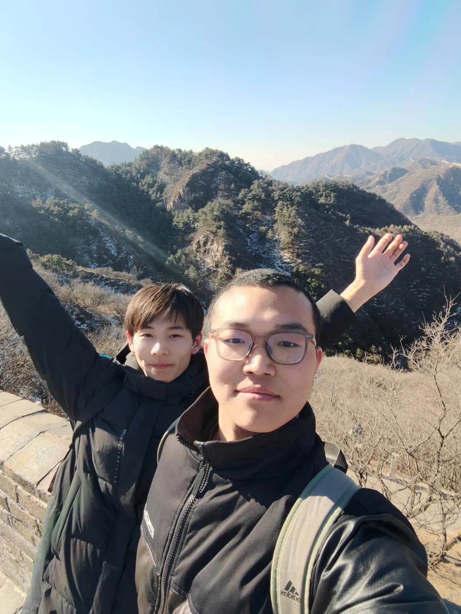
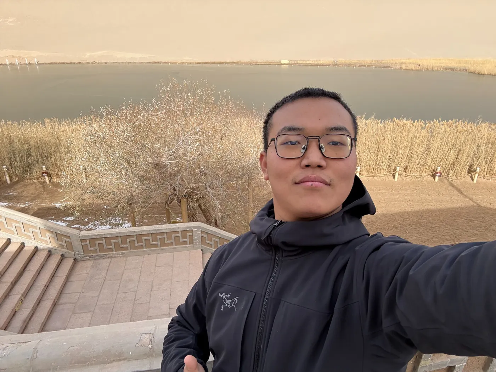
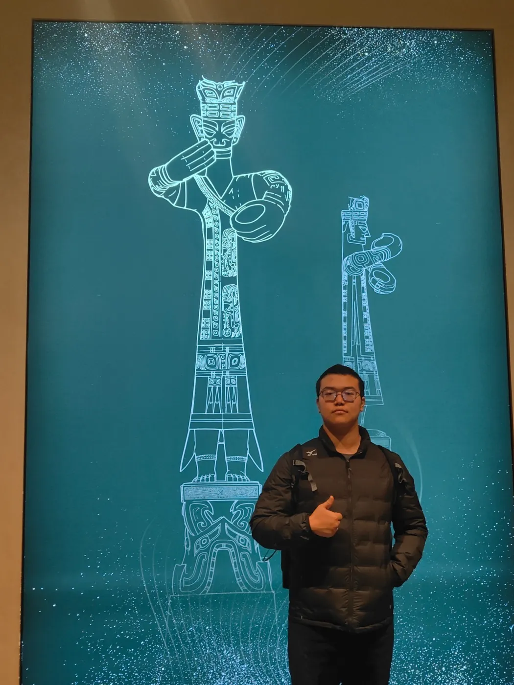
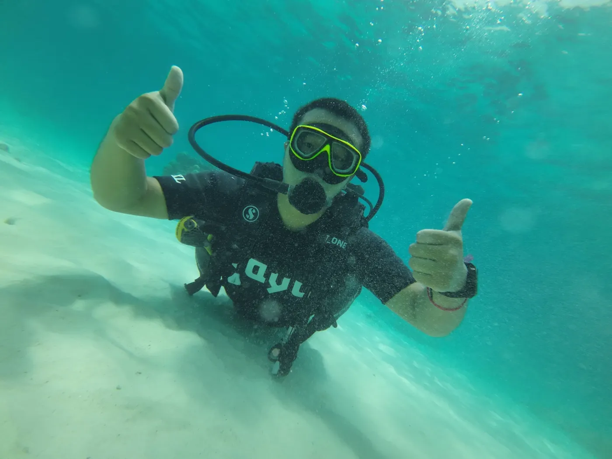
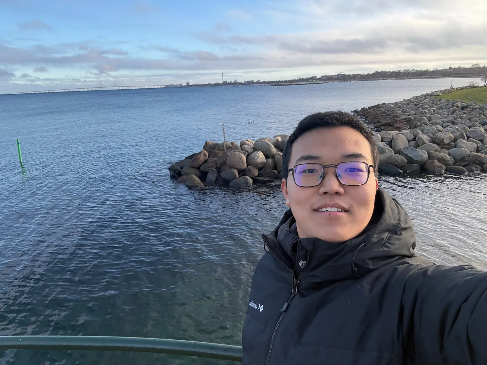
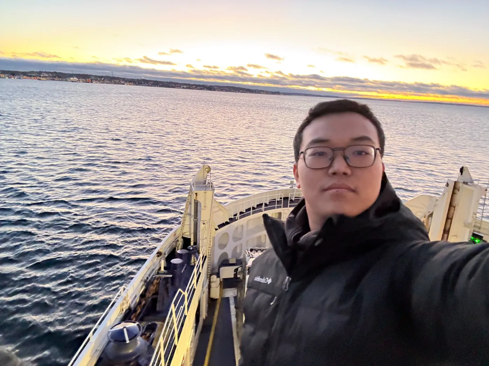
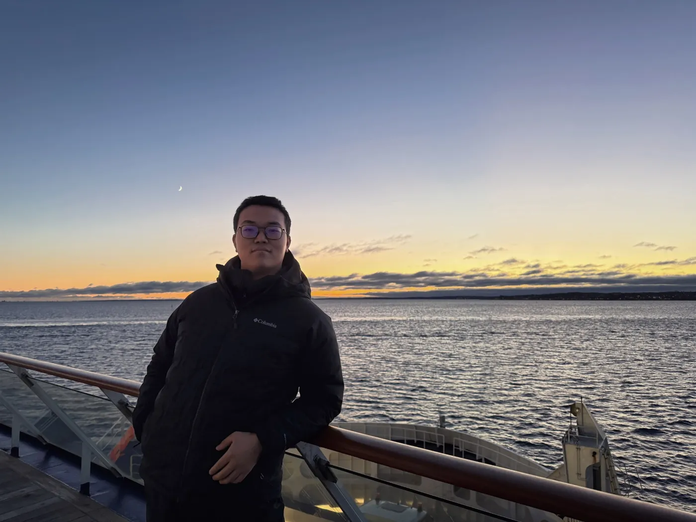
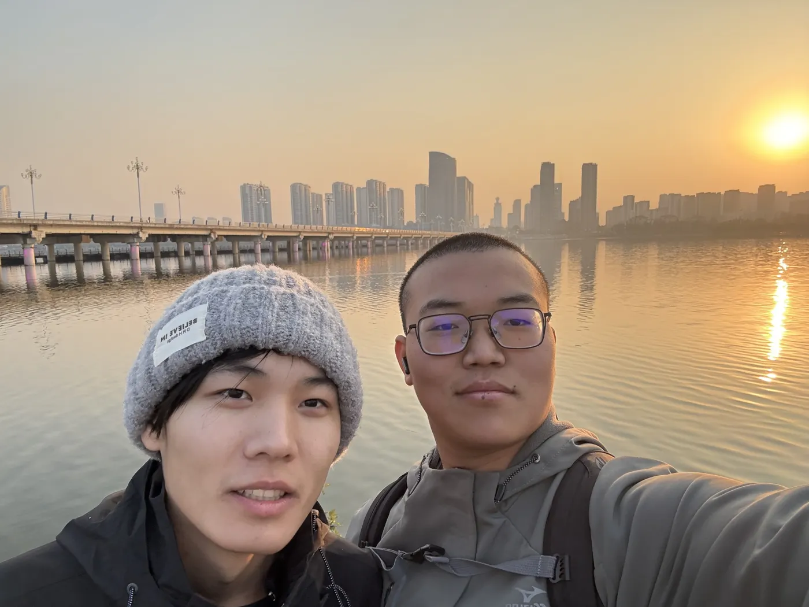
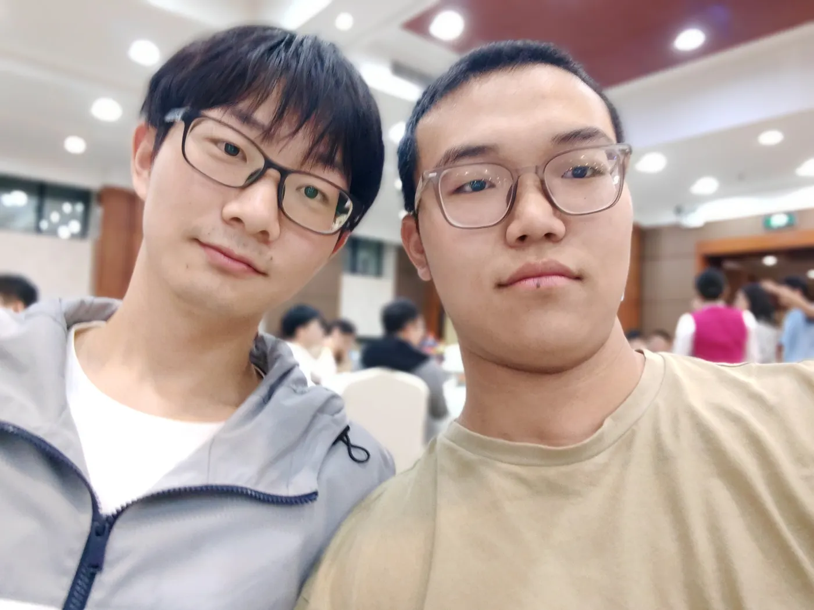
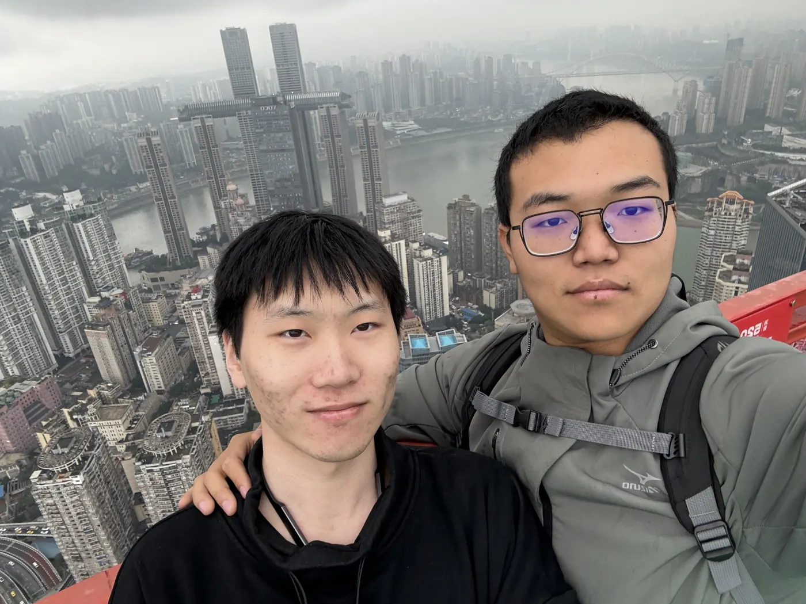

THE LIFE EDIT
Less routine.More living.
Northern lights, mountain paths, open water, familiar faces. A personal collection, one chapter at a time.
Explore the journal ↘
01 / PERSONAL COLLECTION
Paths worth taking.
A change of scenery, a new perspective.
{kind=link}

{kind=link}


{kind=link}


02 / PERSONAL COLLECTION
Drawn to the water.
From the shoreline to beneath the surface.
{kind=link}


{kind=link}


{kind=link}

{kind=link}

03 / PERSONAL COLLECTION
Better, together.
The places matter. The people matter more.
{kind=link}


{kind=link}
{kind=link}


{kind=link}



02 / IN MOTION
A littlemore adventure.
Above the water, beneath the sky. A short film from a day at sea.
SEA / SKY / 00:30THE THINGS I COME BACK TO
Move. Read. Travel. Repeat.
Sports, books, chess, music, and discovering good food. There is always something new to discover.
“Love is worth more than anything.”
04 / THE ARCHIVE
Earlier frames.
More moments from the personal collection.


LEARNING OUT LOUD
Notes from the process.
Technical writing, practical lessons, and ideas in progress.